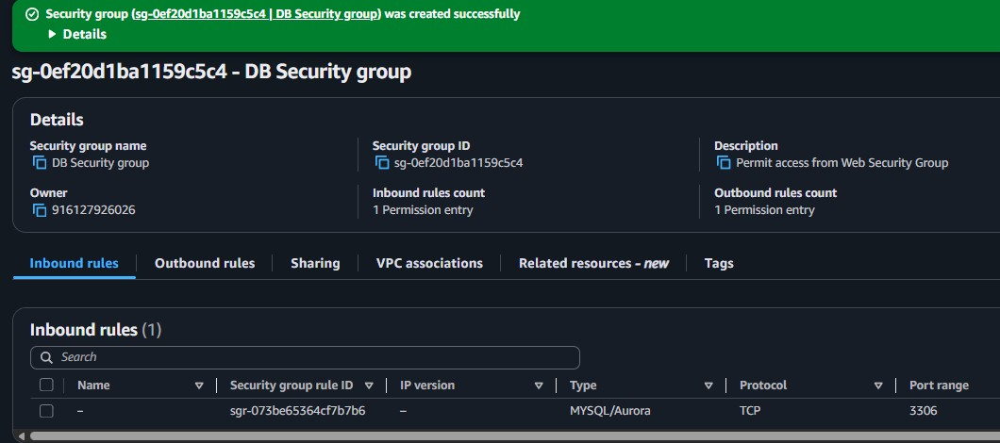
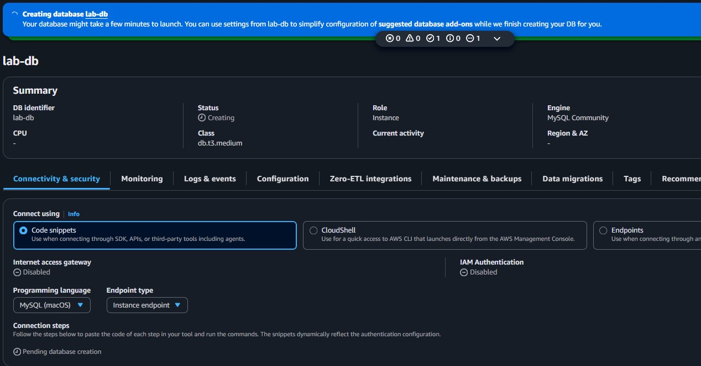
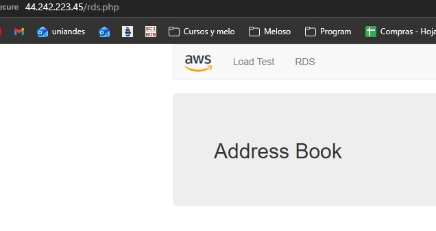

Network Preparation
Created the database security group and subnet group required before the RDS launch.
This lab introduces Amazon RDS through a practical workflow. It builds the network prerequisites for a managed database, launches a Multi-AZ MySQL instance, and then connects a web application to that database so the data can be tested from the browser.
Created a dedicated DB Security Group, defined a DB Subnet Group across two private subnets, launched a Multi-AZ MySQL RDS instance named lab-db, copied the endpoint, and used the address book web application to persist data through the managed database.
Created the database security group and subnet group required before the RDS launch.
Configured a Multi-AZ MySQL instance with the lab credentials and captured the generated endpoint.
Connected the web application to the database and verified persistence through the address book interface.
The workflow moved from infrastructure setup to application validation, which is the normal path when introducing a managed database service.

lab-db, used the credentials main and lab-password, and chose the db.t3.medium class.lab.
lab-db MySQL instance is being provisioned, showing the selected identifier, instance class, and connectivity section where the endpoint is later copied.lab, the username main, and the password lab-password.
Main services and settings that made the managed database reachable from the application.
DB Security GroupAllows inbound MySQL/Aurora traffic on port 3306 only from the Web Security Group.
DB Subnet GroupTells Amazon RDS which subnets can host the database instance, using at least two Availability Zones.
Multi-AZ DB InstanceCreates a primary database and a synchronously replicated standby instance in another Availability Zone.
Initial database name: labCreates the starting database schema used later by the web application.
RDS EndpointThe application uses this hostname to establish the database connection.
This lab connected infrastructure thinking with application behavior. Creating the RDS instance was only part of the task. The full success condition was that the web application could authenticate, initialize the schema, and persist records through the managed database.
The most useful takeaway was understanding how several AWS layers combine here: VPC security, subnet placement, managed database settings, and application configuration. If any of those layers is misconfigured, the app will not reach the data layer.